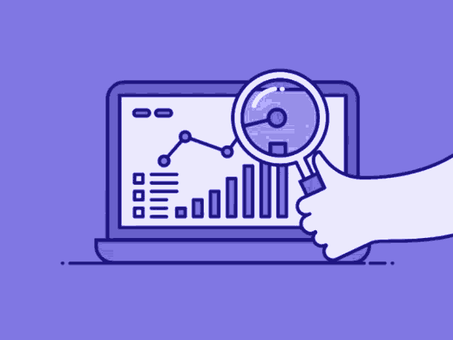

| Category | Technologies |
|---|---|
| Set |     |
| Framework |     |
| Data |    |
| Backend |    |
| Cloud |     |
| DevOps |  |
| Testing |  |
| Misc |    |
| Editors |     |


Nací en Cuernavaca, México.Todo comienza al rededor de los 13 años con un interés en el diseño gráfico y la programación, el arte y la ecología. A esa edad agarraba trabajos sencillos, lo que me hizo ver una demanda en el diseño y la publicidad. Al rededor de los 15 años comienzo con trabajos freelance de diseño y algunos proyectos.
A la edad de los 16 a los 19 años, comencé trabajando en una imprenta de publicidad en donde me dieron la oportunidad de desarrollarme más como diseñador y auxiliar administrativo, junto con eso estudiaba en la universidad la carrera de Mercadotecnia y publicidad. Al no presentarme un reto más allá de sólo ver lo que ya venía trabajando, decido cambiar de carrera, ahora a Relaciones Internacionales y Economía, lo cual me resulta muy agradable y estudió al rededor de un año y medio, pero eso tuvo como resultado darme más ganas de emprender y tener negocio propio, así que abandonó la carrera a los 20 y terminó trabajando en algunos lugares y proyectos, aparte también aprendiendo sobre Ciencias Sustentables en talleres y cursos.
A la edad de 21 años, comienzo con un negocio más formal de Muebles ecológicos hechos con llantas y madera reciclada. Por ese periodo nace mi primera hija. Con lo cual tenía que también tener un trabajo extra, dejó ese emprendimiento por falta de recursos y tiempo. Y mi padre me introduce a la venta de arte; Con lo que ganaba junté para invertir con un Networking de telecomunicaciones, y resultó bien el crecimiento del equipo y logre ganar algo de dinero muy rápido.
Ya con 22 años aproximadamente comencé a invertir en crear un pequeño restaurante bar llamado "La Barra Azteca" concepto de burritos con ingredientes prehispánicos y mezcal, vendí la idea y al poco rato conozco una persona y nos asociamos para crear algunas pizzerías, la idea se llamaba "Pizzharina" una pizza de tortilla de harina en vez de masa, como son tradicionales. Continuamos abriendo hasta 3 locales, pero el que era mi socio, terminó haciendo fraudes a personas y a mí, pero yo termine siendo el que pago los platos rotos porque esta persona desapareció y mi nombre estaba en juego. Porque cuento esto... Porque es parte de mi experiencia, lo que aprendí es invaluable, y hace parte de mi ética. Además, ahora me resulta divertido.
Por lo sucedido contraigo varias deudas, pero continuo con tres trabajos a la vez, ya qué venía un segundo bebé en camino. Así que por las mañanas era ayudante de carpintero ya qué no había trabajos disponibles, después de eso vendía algunos productos de novedad, por las noches hacía diseños y los fines de semana estudiaba diseño 3D y edición de vídeo. No tardó mucho en donde el dueño de la carpintería me ascendiera para realizar modelados 3D de diseños de muebles, cocinas, y ser su auxiliar contable por mi experiencia previa. Pasaron unos meses y justo eso hizo que optará por iniciar mi propia agencia de publicidad, con lo que ahí nace "Tree House, Publish and Desing" Pero su primera creación duró muy poco, porque me hicieron una propuesta para trabajar con una empresa dedicada a la imagen corporativa de escuelas, cuya empresa tenía más de 50 años en el mercado. llamado "Impemex" . En donde trabaje desde el área de producción, ventas, diseño hasta el área contable y después administrativa. Dónde pude desarrollar más mi manejo de equipos, pero sobre todo pude llevar a la empresa a una renovación tecnológica, desde la creación de su página web, hacer diseño, campañas publicitarias y su introducción a las redes, Google Analytics, etc. Periodo del 2018 al 2020, en dónde debido a la pandemia y sus clientes primordialmente pertenecer al sector de la educación, disminuyeron sus ventas y posteriormente a detener labores.
Dentro del periodo del 2018 al 2020, también pasaba los ratos libres aprendiendo más sobre social-media marketing, análisis de datos y video marketing, lo cual iba aplicando en mi trabajo en Impemex cómo comentaba anteriormente cuando ocurre la pandemia y no puedo continuar trabajando en esa empresa. Pero justo los conocimientos que había adquirido me permitieron continuar con mi proyecto de Tree House, dónde la demanda del mercado aumentaba de querer mudarse a la era digital. Arme un equipo en donde realizábamos desde el diseño de la página web, campañas en redes sociales, con Google Ads, lograr posicionar algunos negocios, así hasta mediados del 2021, el problema llego cuando no supe cómo poder automatizar todos esos procesos.
Tras mi búsqueda del cómo poder automatizar los procesos de redes sociales, y poder ayudar a tomar buenas decisiones empresariales, asistencia y organización, bots de servicio al cliente, y muchas otras partes relacionadas, llevaron a mi interés por usar la inteligencia artificial, en donde encontré a Python y el Machine learning y así comencé a estudiar de manera autodidacta, también haciendo certificaciones en la web y análisis de datos con Google, para mi buena suerte Impemex volvió a iniciar actividades y me invitaron a trabajar nuevamente, lo cual eso permitió que pudiera en este año 2022 estudiar en Platzi la carrera de Data Scientist & AI.
Tras presentar algunos problemas la empresa de "Impemex" debido a la pandemia, deciden los dueños vender la empresa, y así está comenzando para mí un nuevo comienzo. En dónde busco desarrollarme como Data Scientist y continuar para convertirme en un Machine learning engineer. Actualmente, estaré subiendo mis avances en GitHub. Y estoy en búsqueda de continuar escribiendo más historias...

I was born in Cuernavaca, Mexico.It all starts around the age of 13 with an interest in graphic design and programming, art, and ecology. At that age, he was taking simple jobs, which made me see a demand for design and advertising. When i was 15 years old, I start with freelance design jobs and some projects.
When i was 16 to 19 years, I started working in an advertising printer where I was allowed to develop further as a designer and administrative assistant, along with that I was studying Marketing and Advertising at the university. By not presenting myself with a challenge beyond just seeing what I had already been working on, I decided to change my career, now to International Relations and Economics, which I find very pleasant I studied for about a year and a half, but that resulted in giving me more desire to start and have his own business, so he dropped out at 20 and ended up working in some places and projects, apart from also learning about Sustainable Sciences in workshops and courses.
when i was 21 years, I start a more formal business of ecological furniture made with tires and recycled wood. During that period my first daughter was born. He also had to have an extra job, he left that venture due to a lack of resources and time. And my father introduces me to the sale of art; With what I earned I put together to invest in telecommunications networking, and the growth of the team turned out well and I managed to earn some money very quickly.
Approximately 22 years, I began to invest in creating a small restaurant-bar called "La Barra Azteca", a concept of burritos with pre-Hispanic ingredients and mezcal, I sold the idea and soon I met a person and we partnered to create some pizzerias, the idea came to life. called "Pizzharina" a flour tortilla pizza instead of dough, as they are traditional. We continued to open up 3 stores, but the one who was my partner, ended up defrauding people and me, but I ended up being the one who paid the piper because this person disappeared and my name was at stake. Because I'm telling you this... Because it's part of my experience, and it's part of my ethics. Besides, now I find it funny.
Due to what happened, I incur several debts, but I continue to work three jobs at the same time because a second baby was on the way. So in the mornings she was a carpenter's helper since there were no jobs available, after that she sold some novelty products, in the evenings she made designs and on the weekends she studied 3D design and video editing. It didn't take long for the owner of the carpentry to promote me to carry out 3D modeling of furniture designs, and kitchens, and to be his accounting assistant due to my previous experience. A few months passed and that was exactly what made me decide to start my advertising agency, which is where "Tree House, Publish and Desing" was born. But its first creation did not last very long, because they made me an offer to work with a company dedicated to the corporate image of schools, whose company had been in the market for more than 50 years. called "Impex". I work from the production area, sales, and design to the accounting area and then administrative. Where I was able to further develop my team management, but above all, I was able to lead the company through a technological renovation, from the creation of its website, design, advertising campaigns, and its introduction to networks, Google Analytics, etc. In the period from 2018 to 2020, due to the pandemic and its clients primarily belonging to the education sector, their sales decreased and later they stopped working.
Within the period from 2018 to 2020, I also spent my free time learning more about social media marketing, data analysis, and video marketing, which I was applying in my work at Impemex how I commented before when the pandemic occurs, and I cannot continue working in that company. But precisely the knowledge that I had acquired allowed me to continue with my Tree House project, where the market demand increased from wanting to move into the digital age. I put together a team where we carried out everything from the design of the web page, and campaigns on social networks, with Google Ads, to position some businesses, like this until mid-2021, the problem came when I did not know how to automate all those processes.
My search for how to automate social media processes, and to help make good business decisions, assistance and organization, customer service bots, and many other related parties, led to my interest in using artificial intelligence, where I found Python and Machine learning, and so I began to study self-taught, also doing certifications on the web and data analysis with [Google](https://developers.google.com/machine-learning/crash -course/ml-intro), for my good luck Impemex started activities again, and they invited me to work again, which allowed me to study in this year 2022. Platzi the career of Data Scientist & AI.
After the "Impemex" company presented some problems due to the pandemic, the owners decided to sell the company, and thus a new beginning is beginning for me. Where I am looking to develop myself as a Data Scientist and continue to become a Machine learning engineer. Currently, I will be uploading my progress on GitHub. And I'm looking to continue writing more stories...

| Category | Technologies |
|---|---|
| Data Manipulation |   |
| Data Viz |    |
| Data Base | |
| Cloud | |
Data visualization with

| Category | Software |
|---|---|
| Graphic Desing |   |
| Web Design |  |
| Video Editor |   |

{kind=link}